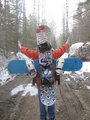
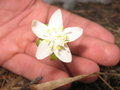
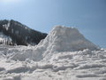
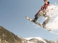
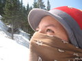
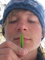
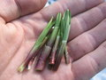
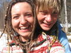
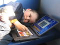
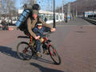

Мамай. Время забирать вещи.
- 26-27 апреля 2008 -

По
всем приметам зимний сезон подходит к концу. На Мамае все меньше
сноурайдеров и все больше черемошников. А потому пора выносить из
зимовья все самое ценное. А то за нас вынесут :)
Я
накануне достал велосипед, смазал и прикрутил все что надо, так что
можно и
покататься. Андрюшка решил поехать в Выдрино, погостить на выходных у
бабушки, а то на Мамай ему ходить с
прошлого
раза хватило :) А вот Марина и Серега (Косма) решили что не
плохо бы
еще
покататься...
Доехали на электричке, потом
пошли-поехали. Я до подъема доехал, а там дальше снег, трактор же
дальше не чистил. Еще немного попробовал проехать, но снег хоть и
замерзший, а все равно ехать "не фонтан". Заныкал вел в лесу. Вышел на
тропу, а тут как раз мужик идет. Разговорились, познакомились. Он типа
охотник, черемшанник, ягодник, гид и фотограф, а еще ледяные
фигуры зимой в городах делает. Игорь из Байкальска. Говорит, что сейчас
пойдет на Осиновку в зимуху, через Южный цирк. Что-то как-то странно. В
итоге он потом в кунге остался, потому что нашел в
каком-то тайнике записку, в которой его друзья сказали, что в
Осиновской зимухе уже ничего и никого нету, и они от туда ушли, и ружье
его вынесли. Ваще
пикец, какие люди вокруг Мамая ходят! Прям жизнь параллельная мимо нас
проходит.





А мы в свою зимуху пришли, в
"Нашу Машу". А там бардак полнейший. По всем видам - соболь залез, и то
ли мышей гонял, то ли выход искал, то ли так просто все с полок скинул
и пакеты изодрал. А может это мыши саблезубые были. Не, это белка была
саблезубая, которая из "Ледникового периода" :)
Да и фик с
ней. Прибрались, пообедали и забатонили. Причем я конкретно забатонил,
даже кататься не пошел, потому что мне и не на чем было, я же доску не
брал, я же сюда пришел отоспаться за все сумасшедшую неделю :) Ну и
поспал... А Косма и Маринка пошли кататься. Встретили ребят из Улан-Удэ
(Артем Олинцевич с женой, и еще один парень, забыл как зовут его). И
нарыли они кочку напротив кунга, на другом берегу, и прыгали
там
всяко-разно, не знаю как, я не видел.

Вечером
пошли мы с Космо искать черемшу. А то она возле нашей зимухи растет, но
маленькая, чуть больше спички в длину. Вышли на тропу, а там два типуса
идут, по виду ни фига не туристы, а непонятно кто. Сказали, что за
черемшой пришли посмотреть. А мы черемши что-то не нашли крупной, зашли
в кунг, спросить у Игоря, а он нас угостил конкретным пучком. Сказал,
что возле Учебки набрал, только там мало. Не сезон еще.
А еще вечером я всякое барахло
зимушное сложил в большие кастрюли и в лесу заныкал. Кстати, недавно сошел мокрой лавиной кулаур, по которому зимой с Трёх Берез к зимухе выкатывали. Хорошо так сошел, лес поломал...
А Косма замутили
костер. Сидим, кайфуем. Тут Артем прибегает и начинает нам
рассказывать, как к ним эти два типуса заходили (улановцы в старой
зимухе были). Короче, эти два кадра сказали, что они тут ходят,
металлолом собирают. Офигеть надо, в лесу металлолом собирать! Кто бы
его сюда сначала принес! Вот так печки и пропадают. У Артема же тогда
кто-то спер печку из его палатки-домика? Он потом к своим ушел, а потом
его жена с парнем пришли в гости, посидели с нами немного, поговорили
так приятно.
Ночью Маринка меня будит: "Лёха, там что-то
страшное творится!". Костер разгорелся сам по себе, ветер воет, на крышу что-то
падает. Вышел из зимухи, посветил вокруг фонариком. Мля! рюкзака моего
нету! Вон в лесу что-то темнеет, ни фига его унесло! Пошел в лес. А это
оказалась теплоизоляция с крыши, с козырька. А где тогда рюкзак? Захожу
в зимуху, рассказываю, а Маринка говорит, что занесла его, когда они с
Космо спать ложились (я то рано уснул). Фу ты, ну ты! Я уж начал на тех
типусов грешить :)
Ну а потом ночной дождь пошел, а под утро
мокрый снег. А я хотел к утренней электричке выкатить. Ну и ладно,
отоспался зато. Поехал позже, на велосипеде до Выдрино доехал. А
рюкзак-то не маленький, со всеми зимними вещами, поясница начала уже
отваливаться к концу пути. Приехал к родителям, забрал Андрюшку,
сели в электричку, а там все те же лица - Маринка, Космо и
Игорь. Как тесен мир :)

-=- 
-=- 
-=- 
Фото:
Марина Леу, Серега Космонавт.
Апрель 2008
Текст: Лёха Слюдянский.
Август 2008